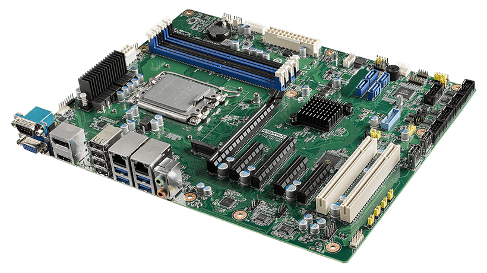

The inception of the motherboard was credited to an IBM engineer Patty Mchugh in 1981 and, at the time, they were called “planars.” A planar was designed to connect the CPU and RAM components and had ports attached that would allow a mouse, keyboard, and even cassette tapes. At the time cassette tapes were widely used storage devices.
Today the motherboard has many more secondary functions and has become increasingly advanced. On a typical motherboard you can find the power supply, between 1 and 4 RAM slots, a couple of PCIe slots, ports for USB devices, headphone and microphone ports, you can power multiple fans, as well as slots for storage devices.

If you were to relate a computer to the human body, you could call the motherboard the skeleton. All the attached parts would be the muscles. The motherboard is responsible for connecting and aiding in the communication of all the connected components. The motherboard is full of small pathways that provide transit for electricity to power each part and allow information to pass through as well. Motherboards are meticulously designed to ensure certain components are placed closer or further from others for the sake of speed, information will be transported faster depending on how efficiently these pathways are placed in the motherboard.